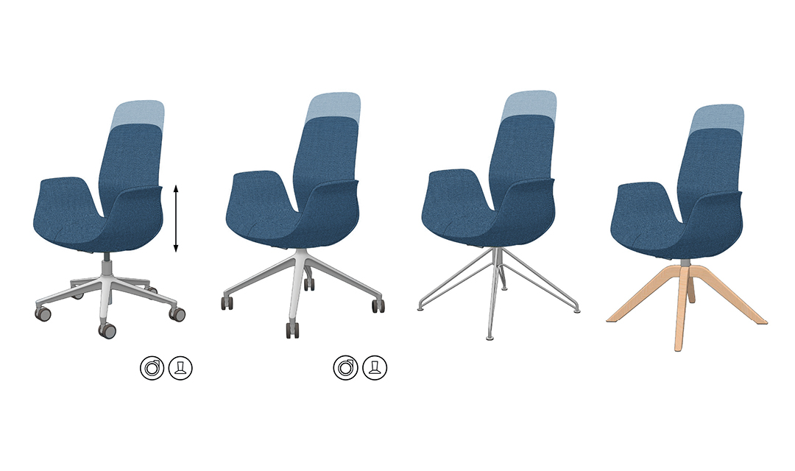

Project: Ellie Chair Family
Role: Industrial Design / Design Strategy
Technologies: Market Research / Workshop Facilitation / Client Communication / Prototyping / Product Development
Timeline: June 2017 - Nov 2018
Context: I led the research and development process for the Ellie seating project while working at ITO Design in Switzerland. Our strategic approach included the development of a wide range of customization options to accomodate new use environments such as home offices, co-working spaces and hot desking.
After a string of recent aquisitions, Flokk, a leading furniture company, tasked ITO Design with determining a new creative strategy for their latest partner, Profim. An indepth research and design process included market surveys at several trade shows and design workshops with stakeholders and Flokk and Profim. Key findings included:
To design a seating family suitable to home and lounge environments, we wanted to move away from the typical 'sitting machine' ergonomic design language of most task chairs and create a soft and comfortable lounge aesthetic. This required the introduction of new (Sub-D) modeling software into our design process, that allowed the form to be shaped around a synchronized recline mechanism and housing.
A complete family with 4 swivel bases and two backrest heights provide a wide range of options for different settings in the home and office.
